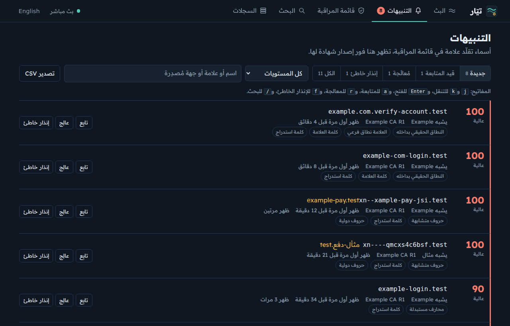
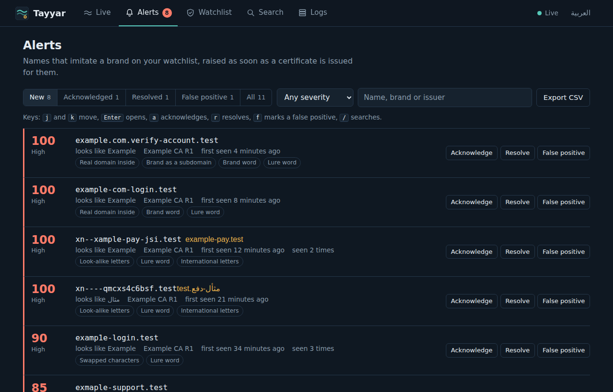
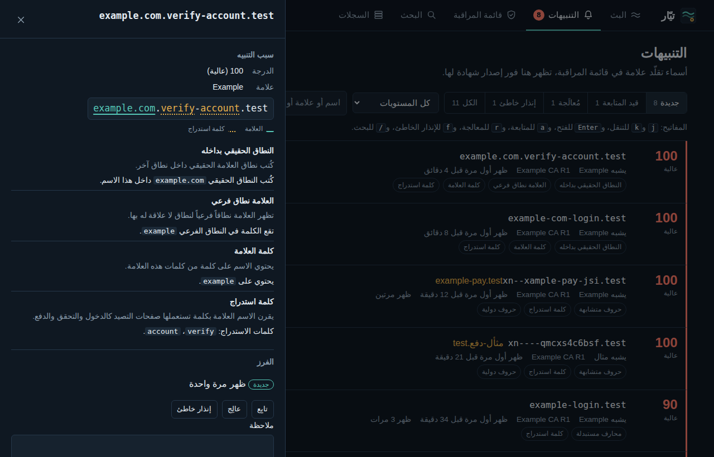
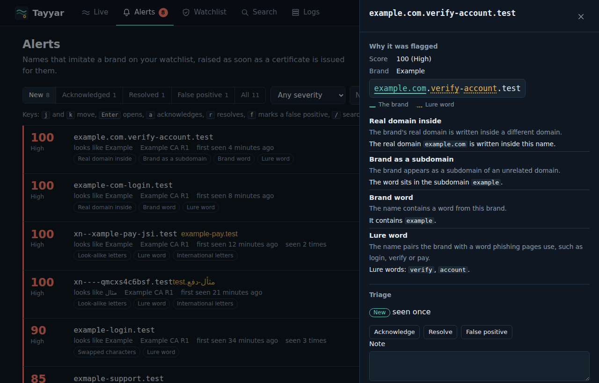
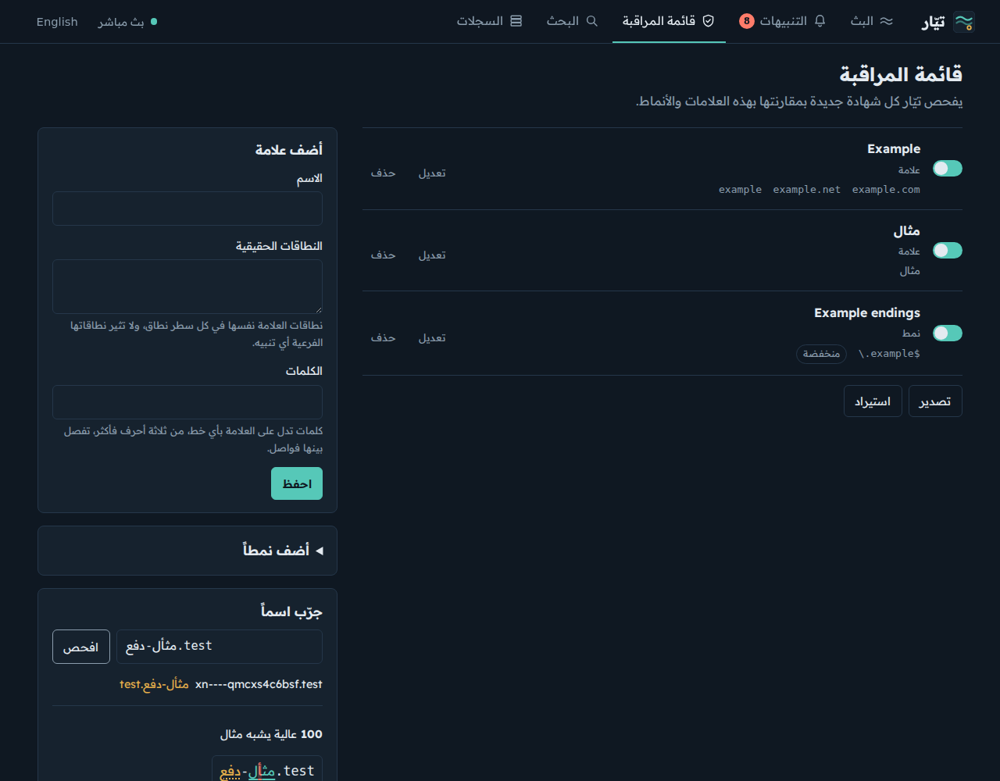
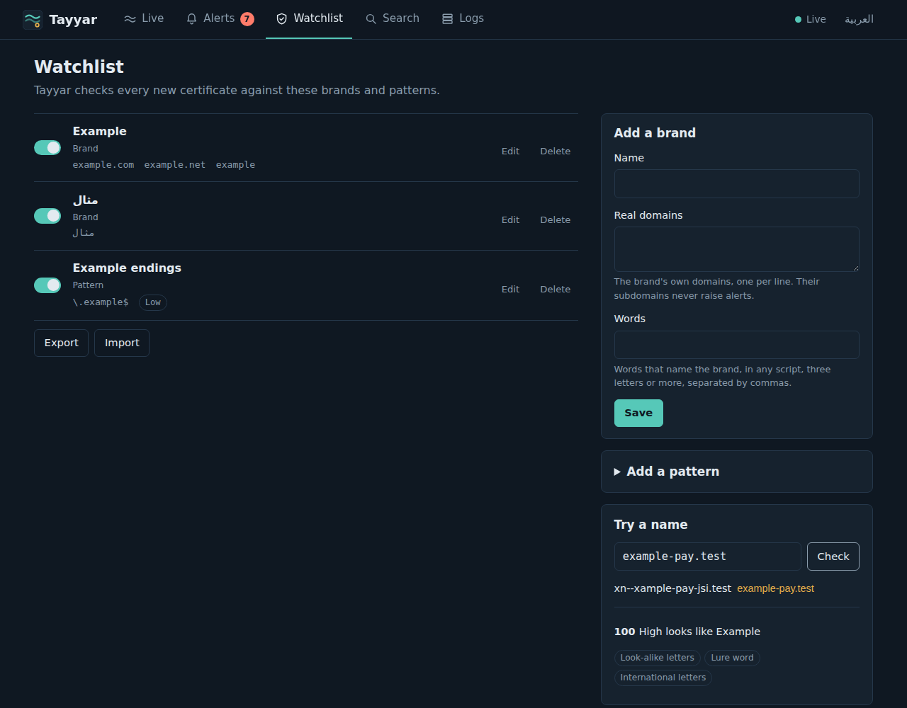
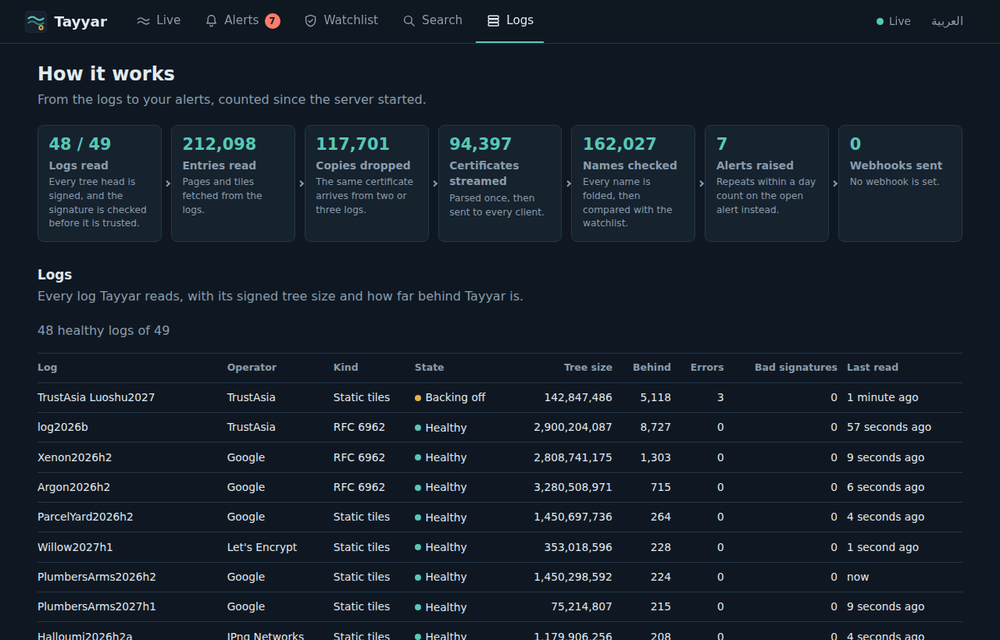
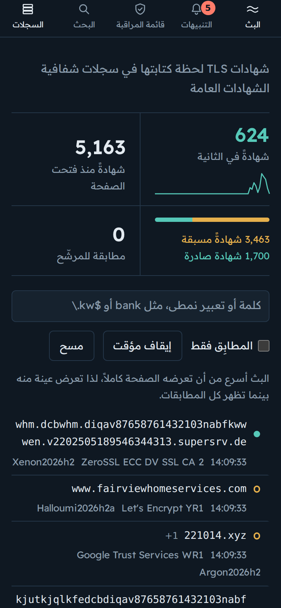

كل شهادة TLS جديدة لحظة تسجيلها، وكل اسم يقلّد علامتك قبل أن يصل إلى أحد.Every new TLS certificate the moment it is logged, and every name that imitates your brand before it reaches anyone.
تيّار أداة مفتوحة المصدر تقرأ سجلات شفافية الشهادات العامة كلها، فتبث الشهادات لحظة إصدارها وتفحص كل اسم فيها بمقارنته بقائمة مراقبتك، بما في ذلك الأسماء العربية والحروف المتشابهة.Tayyar is open source. It reads every public Certificate Transparency log, streams certificates as they are issued, and checks every name on them against your watchlist, Arabic names and look-alike letters included.
1,200شهادة فريدة في الثانيةunique certificates a second
10أسباب يُرفع بها التنبيهreasons a name is flagged
ما يقدّمهWhat it does
كل السجلات موثَّقةEvery log, verified
يقرأ تيّار نوعي السجلات معاً، أي السجلات التي تتبع RFC 6962 والسجلات الثابتة، ويتحقق من توقيع كل رأس شجرة قبل أن يثق بحجمها.Tayyar reads both kinds of log, RFC 6962 and static tiles, and checks each log's signature on every tree head before it trusts the size.
المقلِّدات بالعربية أيضاًLook-alikes, in Arabic too
يكشف الأسماء التي تقلّد علامتك بحروف من خطوط أخرى أو بأرقام مكان الحروف أو بأخطاء إملائية أو بامتداد آخر، ويوحّد الحروف العربية المتشابهة كالكاف الفارسية والعربية.It spots names that imitate your brand with letters from other scripts, digits for letters, misspellings or another ending, and it unifies Arabic letters that read alike, such as the Persian and Arabic kaf.
تنبيهات تتابعها حتى النهايةAlerts you can work through
لكل تنبيه درجة وأسباب مشروحة وحالة تنقله فيها من جديد إلى مُعالَج، مع ملاحظاتك وتصدير CSV واستعلام DNS عند الطلب.Every alert has a score, its reasons in plain words and a status you move from new to resolved, with notes, CSV export and a DNS lookup on demand.
إشعارات موقَّعةSigned webhooks
يرسل التنبيهات الجديدة إلى أي عنوان ويب بصيغة JSON أو نص، ويوقّع كل رسالة بمفتاح سري حتى يتأكد المستقبِل من مصدرها.New alerts go to any webhook as JSON or text, and every body is signed with HMAC SHA-256 so the receiver can check where it came from.
البحث وآخر ساعةSearch and the last hour
ابحث في آخر نصف مليون شهادة، واطّلع على أكثر الجهات إصداراً وأكثر الامتدادات ظهوراً خلال الساعة الأخيرة.Search the last half a million certificates, and see which issuers and endings led the last hour.
على جهازك وتحت سيطرتكOn your machine, under your control
لا يعتمد على أي مكتبة خارجية ولا يرسل شيئاً إلى طرف ثالث، ويستمع على العنوان المحلي ما لم تطلب غير ذلك، ويحمي الواجهة برمز وصول حين يصل إليها غيرك.No dependencies and no third-party requests. It listens locally unless you say otherwise, and an access token guards the interface when others can reach it.
الشاشاتScreens


التنبيهات مرتبة حسب الحالة والخطورة.Alerts by status and severity.


سبب كل تنبيه بكلمات واضحة، مع الشهادة كاملة.Why each alert was raised, in plain words, with the full certificate.


أضف علاماتك وأنماطك ثم جرّب أي اسم قبل أن يظهر.Add your brands and patterns, then try any name before it appears.

حالة كل سجل وحجم شجرته ومقدار التأخر عنه.Every log's state, tree size and lag.

الواجهة كاملة على الهاتف.The whole interface on a phone.
كيف يعملHow it works
يجلب القائمة العامة للسجلات الموثوقة ويختار منها ما يقبل الشهادات اليوم.It loads the public list of trusted logs and keeps the ones accepting certificates today.
يقرأ رأس الشجرة الموقَّع من كل سجل ويتحقق من توقيعه.It reads each log's signed tree head and checks the signature.
يجلب المدخلات الجديدة ويحذف النسخ المكررة ثم يحلل كل شهادة مرة واحدة.It fetches the new entries, drops the copies from other logs and parses each certificate once.
يفحص كل اسم بمقارنته بقائمة المراقبة ويرفع تنبيهاً عند التشابه.It checks every name against the watchlist and raises an alert on a look-alike.
يبث الشهادات والتنبيهات عبر WebSocket ويرسل التنبيهات إلى عناوين الويب.It streams certificates and alerts over WebSocket and posts alerts to webhooks.
التشغيلRun it
يعمل تيّار على Node 22 أو أحدث دون تثبيت، فشغّله ثم افتح العنوان المحلي في متصفحك.Tayyar runs on Node 22 or later with nothing to install. Start it, then open the local address in your browser.
وحين يصل إليه غيرك فاحمِه برمز وصول وأرسل التنبيهات إلى عنوان ويب يوقّع تيّار رسائله إليه.When others can reach it, protect it with an access token and send alerts to a webhook, with every message signed.
TAYYAR_TOKEN='a long random secret' npx github:SiteQ8/Tayyar serve \
--host 0.0.0.0 --data /var/lib/tayyar \
--webhook text:https://example.com/hooks/tayyar --webhook-secret 'another secret'
ومن سطر الأوامر تجرّب الأسماء بمقارنتها بقائمة المراقبة أو تتابع البث دون واجهة.From the command line you can test names against a watchlist, or follow the stream without the interface.
كل مسار WebSocket يرسل رسائل JSON، فتبدأ بسطرين وتصلك التنبيهات على مسارها الخاص.Every WebSocket path sends JSON messages, so two lines are enough to start, and alerts have a path of their own.
/الشهاداتcertificates
/full-streamالشهادات مع بياناتها الكاملةcertificates with their DER bytes and chain
/domains-onlyالأسماء فقطnames only
/alertsالتنبيهاتalerts
const ws = new WebSocket('ws://127.0.0.1:4000/alerts');
ws.onmessage = (e) => console.log(JSON.parse(e.data));
إخلاء المسؤوليةDisclaimer
يُشارَك تيّار ليبيّن كيف تعمل مراقبة شفافية الشهادات، لذا يُقدَّم كما هو دون أي ضمان، ولا يتحمل صاحبه أي مسؤولية عن طريقة استخدامه أو عن أي قرار يُتخذ بناءً على نتائجه.Tayyar is shared to show how Certificate Transparency monitoring works. It comes as is, without warranty of any kind, and its author accepts no liability for how it is used or for any decision based on its output.
والتنبيهات تقديرات آلية، أي أن الاسم الذي يُنبَّه عليه ليس دليلاً على أن أحداً أخطأ، كما أن الاسم الذي لا يُنبَّه عليه ليس دليلاً على سلامته.Alerts are automated guesses: a flagged name is not proof that anyone did anything wrong, and a name that is not flagged is not proof that it is safe.
وأسماء العلامات والنطاقات في شاشات التنبيهات وقائمة المراقبة متخيَّلة ومحجوزة للأمثلة، بينما يعرض البث الحي شهادات عامة من سجلات الشفافية، فلا يعني ظهور أي اسم ادعاءً على أحد ولا ارتباطاً به.The brands and domains in the alert and watchlist screens are invented, using names reserved for examples, while the live stream shows public certificates from CT logs. No name shown implies a claim against anyone or any affiliation.
ثم إنك تشغّل تيّار على جهازك بنفسك، لذا تتحمل مسؤولية استخدامه واحترام سياسة الاستخدام لكل سجل يقرؤه.You run Tayyar on your own machine, so how you use it, and respecting each log's usage policy, are up to you.